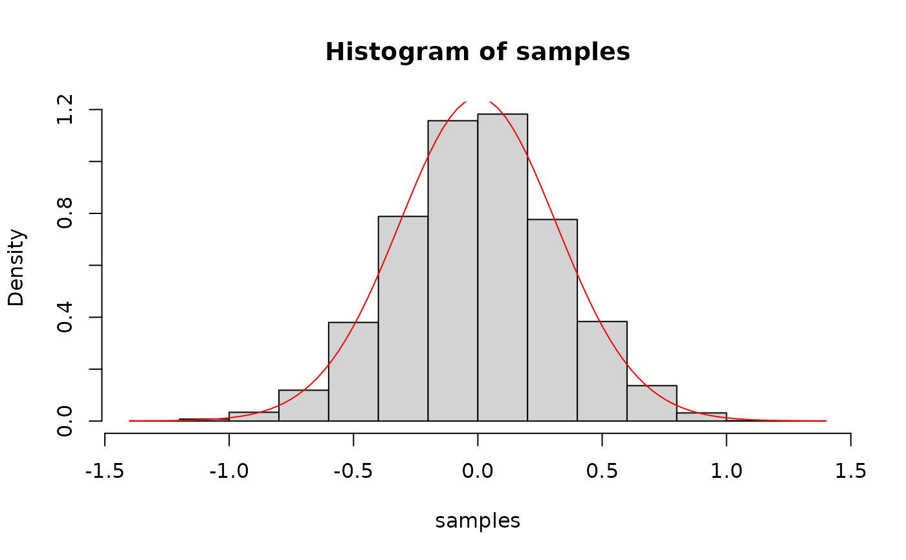

Performs rejection sampling to generate samples from a target distribution.
Each draw can come from its own target: draw i is sampled from f
evaluated at the i-th element of every per-draw argument in ..., under
the envelope max_f[i].
Arguments
- n
Integer. The number of samples to generate.
- f
Function. The target density divided by the proposal density, up to a constant; with a uniform proposal, the target density itself. Its first argument takes a vector of proposals, generally not of length
n;fmust be vectorized over it and over the per-draw arguments in....- max_f
Numeric. A finite upper bound of
f, either a single value or one value per draw (lengthn). A bound below the maximum offbiases the draws without a warning.- proposal_fun
Function. A function that generates samples from the proposal distribution.
- ...
Additional arguments to be passed to the target density function
f. Withn > 1, arguments of lengthnare taken per draw, so drawiuses theiri-th elements. Arguments of any other length are passed whole to every call off; recycle them withrep_len(x, n)to use them per draw. Pass constants whose length may equaln, such as a lookup table, through the closure offinstead of....
Examples
target_density <- function(x) brms::dvon_mises(x, mu = 0, kappa = 10)
proposal <- function(n) runif(n, min = -pi, max = pi)
samples <- rejection_sampling(10000, target_density, max_f = target_density(0), proposal)
hist(samples, freq = FALSE)
curve(target_density, col = "red", add = TRUE)

# one location per draw
mu <- rep(c(0, 2), 5000)
samples <- rejection_sampling(
10000, brms::dvon_mises, max_f = brms::dvon_mises(0, 0, 10), proposal,
mu = mu, kappa = 10
)
tapply(samples, mu, mean)
#> 0 2
#> -0.0009627108 1.9951207670